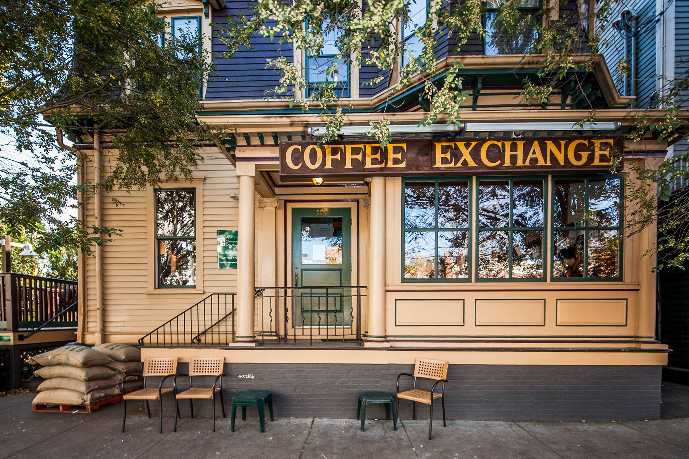
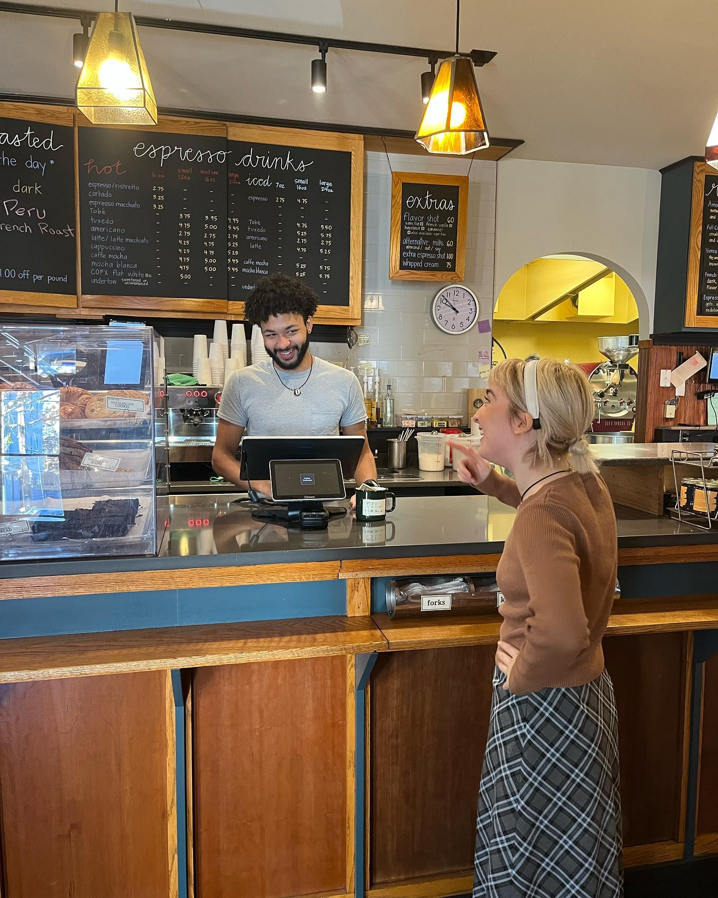
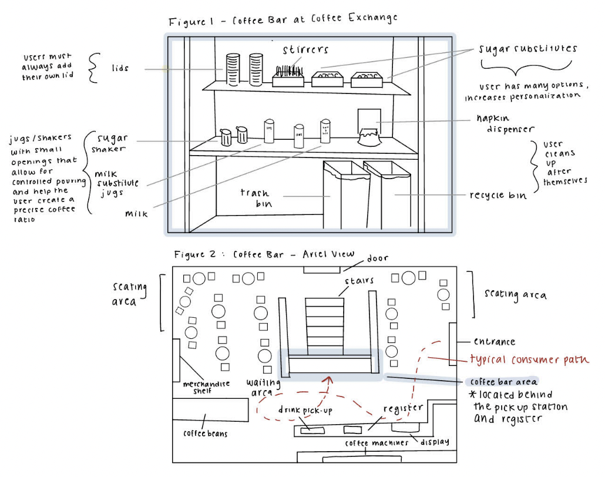
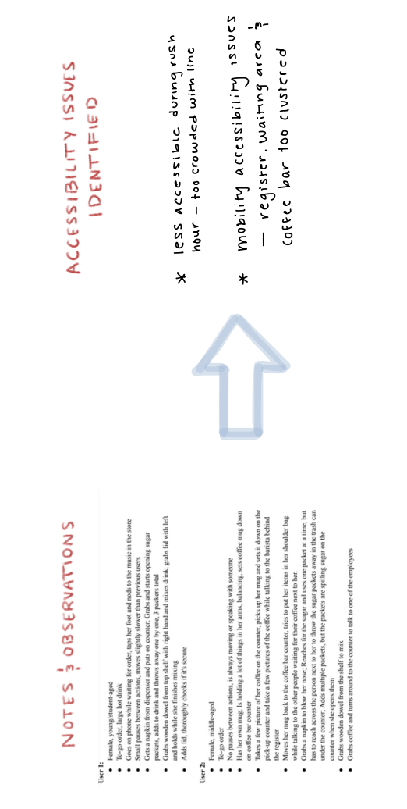
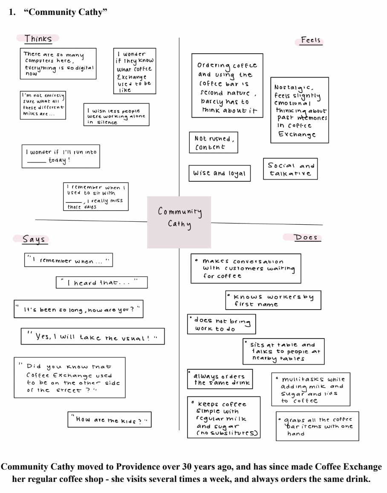

Personas, Primary Research, Storyboarding, Redesign
Coffee Exchange, Providence, RI
(Contribution: Designer & Researcher, Personal student project)
Thought: Who are the typical consumers at Coffee Exchange -
how are they similar, how are they different, and why are they
here in the first place? How can Coffee Exchange's user experience
be best-adept to satisfy the typical persona?
First things first...
Is there a problem in the first place?
To answer this question, I chose to focus on one specific
interface, Coffee Exchange's coffee bar. Located in front of the
e register and pick-up counter, the coffee bar is an integral part of
the Coffee Exchange experience, but the least regulated by the
staff and most open-ended with regards to human variability.

A Deeper Dive into the Coffee Bar
The coffee bar at Coffee Exchange is intended to add an element
of personalization to the everyday coffee experience - this solves
the issue of customer dissatisfaction that stems from differences
in individual preferences. The coffee bar allows a customer to
essentially customize their own drink through a variety of mix-ins,
reducing the time a barista may need to typically spend
personalizing various menu drinks. This coffee bar therefore allows
Coffee Exchange to have a simpler menu, notably saving
time during busy hours.

Key components: The objects that contribute to the increased
level of personalization and individualization that a user
benefits from interacting with the interface. This includes
the add-ins such as the milk jars and sugars, which allows
a user to tailor the ratio of the ingredients in their
coffee to their preference, in addition to the milk and sugar
substitutes, which allows a user to best match their drink
to their lifestyle.
People-Watching!
Human interactions with the bar
To understand how users most naturally interact with the
the coffee bar in an unbiased manner, I visited Coffee
Exchange in-person and observed consumer interactions with
the bar for 2 hours. From this, I noticed the following:

People-Asking!
Understanding human behavior
Though slightly terrifying, I approached three different
people using the coffee bar and asked them some questions
- turns out it was actually super interesting! Here's what
I learned:
1. Why did you decide to come to Coffee Exchange today?
1. Why did you decide to come to Coffee Exchange today?
2. What goal did you have in mind when you came to
this area [coffee bar]?
3. Walk me through the decisions you took here
- for example, what caught your glance first?
4. On a scale of 1-6 how confident are you in your
abilities to utilize these items?
From the responses, I created two distinct persons:
"Community Cathy"

"Motivated Molly"
Community Cathy loves the coffee bar interface because she
enjoys making her go-to drink order, but occasionally feels
overwhelmed by the growing selection of milk and sugar
substitutes that occupy the counter. However, she now
typically looks past them and ignores them.
Motivated Molly enjoys the concept of interacting with the
coffee bar interface, but finds the interface to
be inconvenient when it is being used by multiple people,
or when the surrounding area is crowded during
a rush. With the intent of coming to Coffee Exchange to get
work done, she gets slightly annoyed when
she has to wait to maneuver around other users, and does
not enjoy the thought of having to speak to other
customers. Additionally, she feels bad when interacting
with the current layout of the interface results in a
spill or mess, and feels the need to act extra carefully
when customizing her coffee.
Compare & Conrast:
The two personas are very different, primarily in motivation
and goals, but additionally in actions. Regarding motivation,
the personas represent users with different goals for being i
n Coffee Exchange and interacting with the coffee bar interface
- one persona (“Community Cathy”) represents users who go to
Coffee Exchange for the community, and whose habitual
interactions with the coffee bar elements represent routine.
On the other hand, the other persona (“Motivated Molly”),
represents users who are overwhelmed, yet productive college
students - although these users interact with the interface
on a more detailed level (use the substitute milks and sugars),
they also have larger pain points with the interface.
Takeaways + Experience
Overall, expecially as my first project in CSCI 1300 at Brown,
this was the first time I had thought to narrow focus on and
analyze a single interface that I personally interact with
without second thought frequently (I have a very bad Coffee
Exchange obsession). It was so eye-opening to see how a set
of design choices in a user interface caters to different
sets of individuals differently. It was ultimately very
interesting to start to consider how I, as a prospective
product manager or designer, would go about determining a
target persona and designing this interface.
Every object we
interact with at a given moment on a daily basis has a design
backstory to it, and this assignment opened my eyes to this
process!